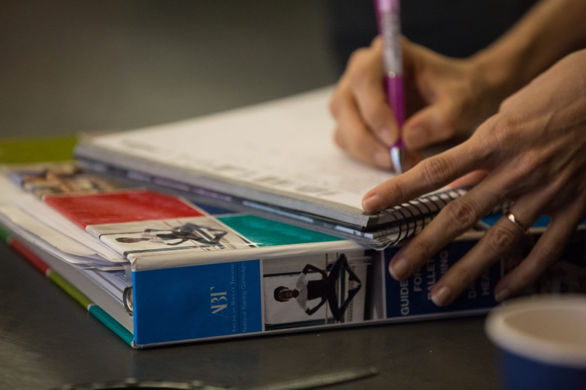
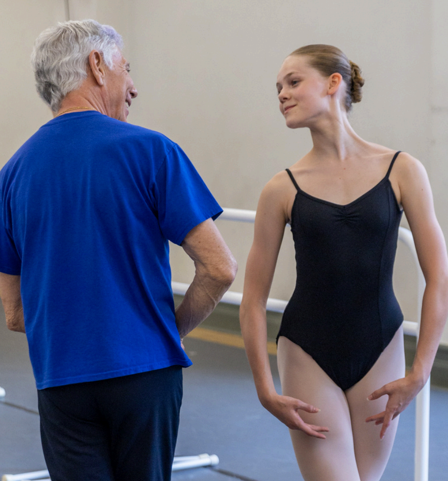
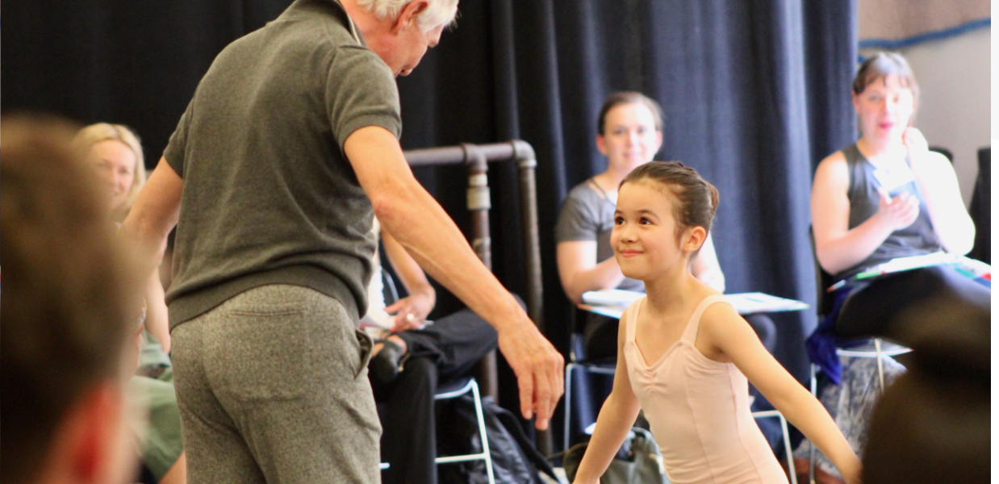
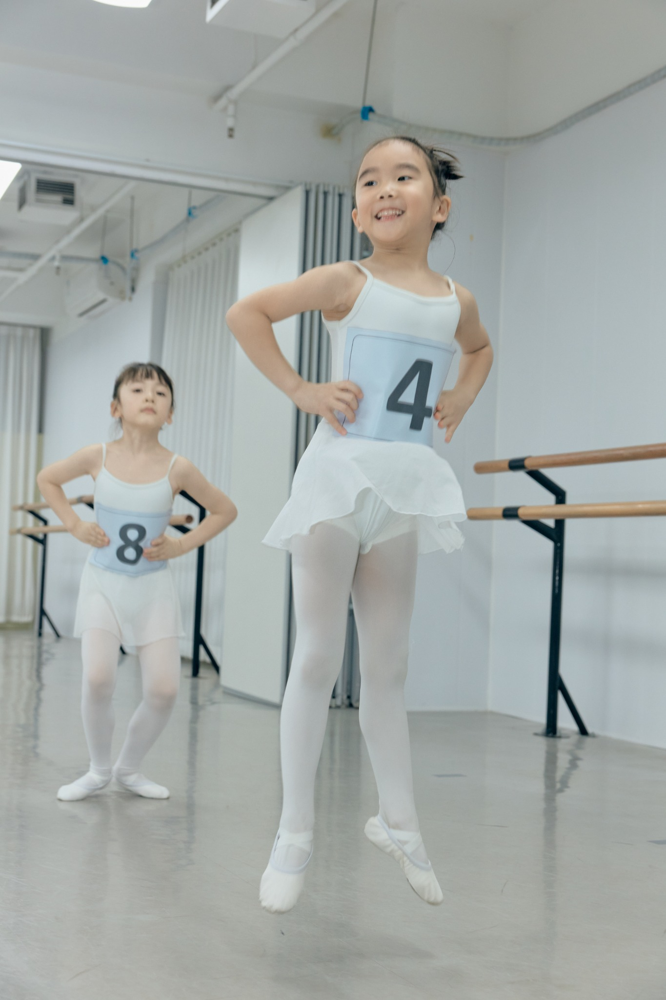
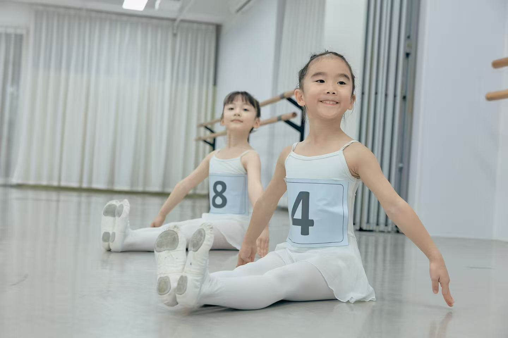
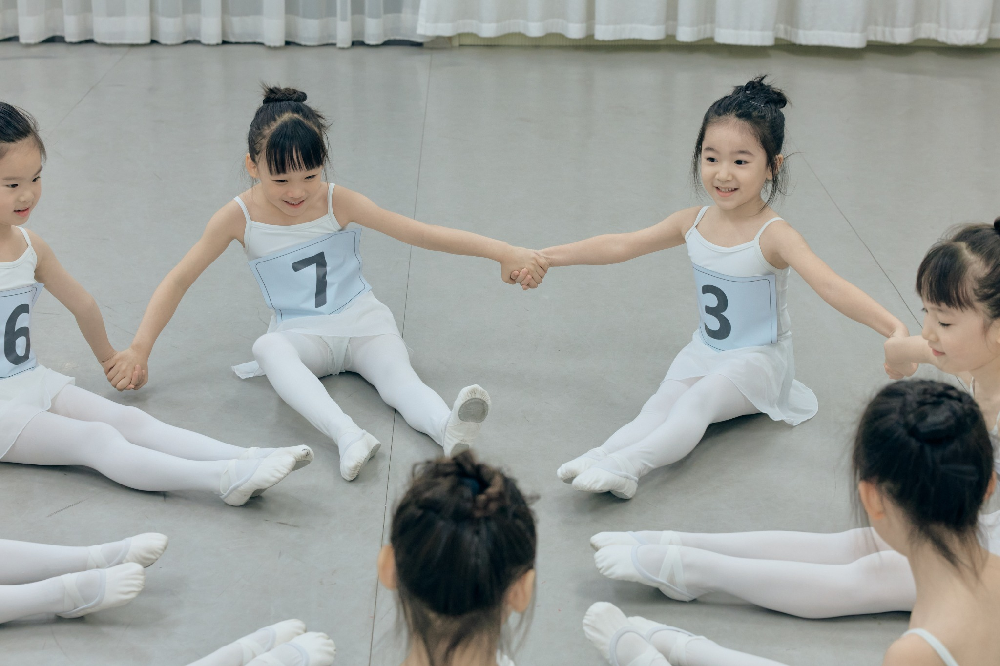
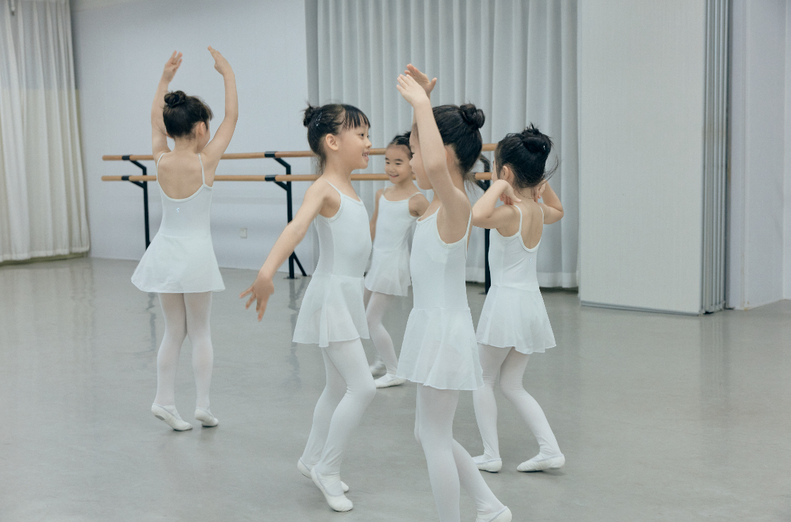

Scientific & Safe科学与安全
从 alignment、coordination、kinetics 到足踝与核心控制，课程重视正确使用身体。训练不是让孩子过早完成高难度，而是在发展阶段允许的范围内建立可持续的技术基础。
Classical Ballet Pathway
一条从身体安全、音乐理解到舞台表达逐步建立的芭蕾成长路径。
在 JIAJING BALLET，ABT NTC 不只是考级课程，而是一套帮助孩子理解身体、听懂音乐、建立舞蹈语言的长期训练体系。

Overview
American Ballet Theatre National Training Curriculum 是一套面向儿童与青少年舞者的系统芭蕾训练路径。它把古典芭蕾的技术训练、艺术表达、儿童身心发展与舞者健康放在同一条成长线上，帮助学生在合适的年龄建立合适的能力。
我们希望孩子获得的不只是“会做动作”，而是逐渐理解：身体如何安全地工作，音乐如何推动动作，舞蹈如何表达情绪、角色与故事。
从 alignment、coordination、kinetics 到足踝与核心控制，课程重视正确使用身体。训练不是让孩子过早完成高难度，而是在发展阶段允许的范围内建立可持续的技术基础。
学生会学习聆听节奏、力度、呼吸与动态变化。我们不只要求动作“对”，也引导孩子真正进入音乐，让动作有质感、有方向、有舞台感。
舞蹈是一种语言。孩子需要学会看懂舞蹈、说出舞蹈、组织舞蹈：理解动作为什么这样设计，也能用身体表达自己的想法与感受。
Training Pathway
ABT NTC 的课程路径从 Pre-Primary、Primary 一直延展至更高等级。每一级都有清晰的学习目标与能力标准，老师会根据年龄、身体发展、技术基础和课堂状态进行评估分班，而不是简单用年龄决定学生“应该在哪一级”。
Pre-Primary / Primary
通过音乐、空间、方向、基础动作词汇和课堂习惯，帮助孩子进入芭蕾学习。这个阶段重视身体感知、节奏感、专注力与对舞蹈的喜欢。
Level 1-3
逐步建立把杆、中间、跳跃、转、port de bras 与空间方向。学生开始理解动作之间的逻辑，而不是只记住组合顺序。
Higher Levels / Repertoire
在更高阶段，技术会与剧目、风格、表演能力和更复杂的身体协调结合。训练目标是让学生具备进入不同舞蹈风格的基础。
Inside the Class
一堂 ABT NTC 路径下的课程不是零散动作的堆叠，而是一条有逻辑的训练链：从身体准备、把杆训练、中间组合，到音乐性、手臂、目光和空间方向的整合。


In Our Studio
这些课堂照片来自 JIAJING BALLET 的学生日常训练。我们希望孩子在清晰的结构里建立技术，在音乐与想象力中学习表达，也在真实、稳定的课堂体验中慢慢长大。




Student Examinations
ABT Student Examinations 更接近一节 prepared class。学生在老师带领下完成符合级别要求的课堂内容，考官观察的是学生在课堂中的综合能力，而不是某一个动作是否“炫”。
Why It Matters
对家长来说，ABT NTC 的价值不是“证明孩子考过几级”，而是为孩子建立一条科学、安全、具备艺术深度的芭蕾成长路线。无论孩子未来走向专业、半专业，还是把舞蹈作为长期热爱，这套训练都能提供稳定、清晰、可持续的基础。
尊重儿童与青少年身体发展阶段，减少过度训练和“透支未来”的风险。
从音乐性、目光、呼吸、质感和舞台意识中建立真正的舞蹈表达。
每个孩子可以按自己的节奏前进，把基础能力打扎实再进入下一阶段。
学生能接触更开放的训练视野，为未来大师课、夏校或海外项目建立基础。
The JIAJING BALLET Way
我们不会把 ABT NTC 变成只为考级服务的训练。它会和 dance literacy、剧目欣赏、即兴、创造性舞蹈、Rambert Grades 以及舞者健康理念一起，构成一个更完整的学习环境。
我们关注每个孩子的身体特点、学习节奏和表达方式，不追求千人一面的标准模版。
训练脚下，也训练耳朵、眼睛、上身和想象力。孩子不仅要“跳得对”，也要“跳得有意义”。
考级可以帮助学生获得阶段性反馈，但我们更重视考试前后的学习过程与长期变化。
从古典芭蕾出发，未来也可以连接现代舞、剧目、舞台实践、夏校和国际项目。
Note: JIAJING BALLET is an independent studio. ABT and American Ballet Theatre are registered names of American Ballet Theatre. Official marks and images should be used only with appropriate permission or replaced with authorized studio materials before public launch.
Start Here